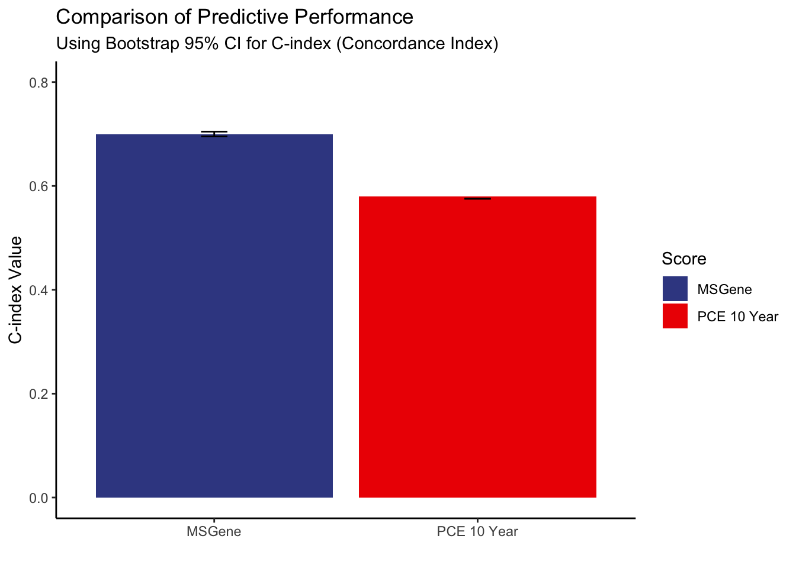

tenyear
2023-09-19
Last updated: 2023-09-19
Checks: 5 2
Knit directory: multistate2/
This reproducible R Markdown analysis was created with workflowr (version 1.7.0). The Checks tab describes the reproducibility checks that were applied when the results were created. The Past versions tab lists the development history.
The R Markdown is untracked by Git. To know which version of the R
Markdown file created these results, you’ll want to first commit it to
the Git repo. If you’re still working on the analysis, you can ignore
this warning. When you’re finished, you can run
wflow_publish to commit the R Markdown file and build the
HTML.
Great job! The global environment was empty. Objects defined in the global environment can affect the analysis in your R Markdown file in unknown ways. For reproduciblity it’s best to always run the code in an empty environment.
The command set.seed(20230211) was run prior to running
the code in the R Markdown file. Setting a seed ensures that any results
that rely on randomness, e.g. subsampling or permutations, are
reproducible.
Great job! Recording the operating system, R version, and package versions is critical for reproducibility.
Nice! There were no cached chunks for this analysis, so you can be confident that you successfully produced the results during this run.
Using absolute paths to the files within your workflowr project makes it difficult for you and others to run your code on a different machine. Change the absolute path(s) below to the suggested relative path(s) to make your code more reproducible.
| absolute | relative |
|---|---|
| ~/multistate2/output/test.rds | output/test.rds |
| ~/multistate2/output/pce.reverse.tenyear.rds | output/pce.reverse.tenyear.rds |
| ~/multistate2/output/ascvd.30year.rds | output/ascvd.30year.rds |
| ~/multistate2/output/ascvd.30year.rc.rds | output/ascvd.30year.rc.rds |
| ~/multistate2/output/ascvd.30year.rcnew.rds | output/ascvd.30year.rcnew.rds |
| ~/multistate2/output/state_occupancy_risk.rds | output/state_occupancy_risk.rds |
Great! You are using Git for version control. Tracking code development and connecting the code version to the results is critical for reproducibility.
The results in this page were generated with repository version 4d7d65c. See the Past versions tab to see a history of the changes made to the R Markdown and HTML files.
Note that you need to be careful to ensure that all relevant files for
the analysis have been committed to Git prior to generating the results
(you can use wflow_publish or
wflow_git_commit). workflowr only checks the R Markdown
file, but you know if there are other scripts or data files that it
depends on. Below is the status of the Git repository when the results
were generated:
Ignored files:
Ignored: .DS_Store
Ignored: analysis/.DS_Store
Ignored: code/.DS_Store
Ignored: data/
Ignored: output/
Ignored: plots/.DS_Store
Untracked files:
Untracked: 502194.pdf
Untracked: analysis/gf.pdf
Untracked: analysis/tenyearpredicthtreh.Rmd
Unstaged changes:
Modified: analysis/newsaturm.Rmd
Modified: analysis/predicted_risks.Rmd
Modified: code/bootstra.R
Modified: prediction_threshod_test.Rmd
Note that any generated files, e.g. HTML, png, CSS, etc., are not included in this status report because it is ok for generated content to have uncommitted changes.
There are no past versions. Publish this analysis with
wflow_publish() to start tracking its development.
R Markdown
library("ggsci")
library(dplyr)
Attaching package: 'dplyr'The following objects are masked from 'package:stats':
filter, lagThe following objects are masked from 'package:base':
intersect, setdiff, setequal, unionlibrary(tidyr)
library(data.table)
Attaching package: 'data.table'The following objects are masked from 'package:dplyr':
between, first, lastlibrary(ggplot2)
library(ggpubr)
test=readRDS("~/multistate2/output/test.rds")
pce.reverse.tenyear=readRDS("~/multistate2/output/pce.reverse.tenyear.rds")
ascvd.30.year=readRDS("~/multistate2/output/ascvd.30year.rds")
#ascvd.30.year.rc=readRDS("~/multistate2/output/ascvd.30year.rc.rds")
ascvd.30.year.rc=readRDS("~/multistate2/output/ascvd.30year.rcnew.rds")
# ages=c(40:79)
# a=data.frame(cbind(ascvd.30.year,lev=test$int))
# a$metric=rep("30y",nrow(a))
#
# b=data.frame(cbind(ascvd.30.year.rc,lev=test$int))
# b$metric=rep("30yRC",nrow(b))
# ab=rbind(a,b)
# colnames(ab)=c(ages,"score","metric")
#
# t=melt(ab,id.vars = c("score","metric"))
#
# # Calculate mean values for each combination
# df_mean <- t %>%
# group_by(score, metric, variable) %>%
# summarise(mean_value = mean(value, na.rm = TRUE))
#
# df_mean <- df_mean %>%
# mutate(
# gender = case_when(
# score %% 2 == 0 ~ "Male",
# TRUE ~ "Female"
# ),
# percentile = case_when(
# score %in% c(1,2) ~ "0.2",
# score %in% c(3,4) ~ "0.5",
# score %in% c(5,6) ~ "0.8",
# TRUE ~ as.character(score)
# )
# )
#
#
# gf=ggplot(df_mean, aes(x = as.numeric(variable), y = mean_value, col = as.factor(interaction(gender,score)),shape=metric)) +
# geom_point() +
# labs(x = "Age", y = "Predicted Lifetime Risk",col="Sex, PRS Percent",shape="FRS") +
# theme_classic()
# ggsave(gf,file="../output/gf.pdf",dpi=600)
#
head(pce.reverse.tenyear) [,1] [,2] [,3] [,4] [,5] [,6] [,7] [,8] [,9] [,10] [,11] [,12] [,13] [,14]
[1,] 3.25 3.63 4.05 4.50 4.98 5.51 6.08 6.69 7.34 8.04 8.79 9.58 10.43 11.33
[2,] 2.05 2.30 2.56 2.85 3.16 3.50 3.86 4.25 4.67 5.12 5.60 6.11 6.66 7.25
[3,] 1.00 1.00 1.00 1.00 1.00 1.00 1.04 1.13 1.22 1.33 1.45 1.59 1.74 1.90
[4,] 1.89 1.95 2.02 2.11 2.21 2.33 2.46 2.60 2.76 2.94 3.15 3.37 3.61 3.89
[5,] 1.31 1.38 1.46 1.56 1.67 1.79 1.93 2.08 2.25 2.44 2.66 2.89 3.16 3.45
[6,] 1.00 1.00 1.00 1.00 1.00 1.00 1.00 1.00 1.00 1.00 1.00 1.00 1.00 1.00
[,15] [,16] [,17] [,18] [,19] [,20] [,21] [,22] [,23] [,24] [,25] [,26]
[1,] 12.28 13.28 14.34 15.46 16.63 17.86 19.15 20.50 21.90 23.36 24.87 26.44
[2,] 7.87 8.52 9.22 9.96 10.74 11.56 12.42 13.33 14.28 15.28 16.32 17.41
[3,] 2.09 2.30 2.54 2.80 3.09 3.41 3.78 4.18 4.63 5.13 5.69 6.32
[4,] 4.19 4.52 4.89 5.29 5.73 6.22 6.76 7.36 8.01 8.72 9.51 10.37
[5,] 3.78 4.15 4.56 5.01 5.52 6.08 6.70 7.39 8.16 9.01 9.95 10.99
[6,] 1.08 1.21 1.36 1.53 1.72 1.93 2.18 2.45 2.76 3.12 3.51 3.96
[,27] [,28] [,29] [,30] [,31] [,32] [,33] [,34] [,35] [,36] [,37] [,38]
[1,] 28.06 29.74 31.46 33.24 35.06 36.92 38.82 40.75 42.72 44.71 46.73 48.77
[2,] 18.55 19.73 20.95 22.23 23.55 24.91 26.32 27.77 29.26 30.80 32.37 33.98
[3,] 7.01 7.78 8.64 9.58 10.64 11.80 13.09 14.51 16.07 17.79 19.68 21.74
[4,] 11.31 12.35 13.48 14.71 16.06 17.53 19.13 20.86 22.73 24.76 26.94 29.29
[5,] 12.14 13.41 14.81 16.35 18.03 19.88 21.90 24.10 26.49 29.08 31.86 34.85
[6,] 4.47 5.05 5.69 6.42 7.24 8.16 9.20 10.36 11.65 13.10 14.71 16.51
[,39] [,40]
[1,] 50.82 52.88
[2,] 35.62 37.30
[3,] 23.98 26.42
[4,] 31.80 34.48
[5,] 38.04 41.42
[6,] 18.50 20.69agesint=c(40:80)
thresh=5;
ten=apply(pce.reverse.tenyear,1,function(x){min(agesint[x>thresh])})
thresh=10;
### this is the data frame with approportiate score
states=readRDS("~/multistate2/output/state_occupancy_risk.rds")
ages=c(40:80)
thresh=0.10;
t=sapply(1:length(states),function(x){w=which(states[[x]]>thresh);ifelse(length(w)>0,min(ages[w]),100)})
df=data.frame("id"=test$identifier,"Cad_0_Any"=test$Cad_0_Any,"Cad_0_censor_age"=test$Cad_0_censor_age,"sex"=test$f.31.0.0,"prs"=test$cad.prs,"ten"=ten,"ms"=t)
df_expanded <- data.frame(
id = integer(),
start = numeric(),
stop = numeric(),
event = integer(),
score1 = integer(),
score2 = integer()
)
library(data.table)
# Convert df to data.table
# Convert df to data.table
setDT(df)
expand_data <- function(id, cad_status, censor_age, score1_age, score2_age) {
ages <- sort(c(40, score1_age, score2_age, censor_age))
result <- list()
for(j in 1:(length(ages) - 1)) {
start_age <- ages[j]
stop_age <- ages[j+1]
if(start_age == stop_age) next # skip if they are the same
s1 <- ifelse(start_age >= score1_age, 1, 0)
s2 <- ifelse(start_age >= score2_age, 1, 0)
event_at_stop <- ifelse(stop_age == censor_age && cad_status == 2, 1, 0)
result[[length(result) + 1]] <- list(id = id, start = start_age, stop = stop_age, event = event_at_stop, score1 = s1, score2 = s2)
}
return(result)
}
list_dt <- lapply(1:nrow(df), function(i) {
row <- df[i,]
expand_data(row$id, row$Cad_0_Any, row$Cad_0_censor_age, row$ten, row$ms)
})
df_expanded <- rbindlist(unlist(list_dt, recursive = FALSE))
library(survival)
# Bootstrap function for C-index
bootstrap_cindex <- function(fit_function, data, n_iter=10) {
cindices <- numeric(n_iter)
for(i in 1:n_iter) {
sample_rows <- sample(1:nrow(data), replace = TRUE)
sample_data <- data[sample_rows, ]
fit <- fit_function(sample_data)
cindices[i] <- summary(fit)$concordance[1]
}
return(list(mean = mean(cindices), se = sd(cindices)))
}
# Fit functions for score1 and score2
fit_function_score1 <- function(data) coxph(Surv(start, stop, event) ~ score1, data = data)
fit_function_score2 <- function(data) coxph(Surv(start, stop, event) ~ score2, data = data)
# Bootstrap C-index
results_score1 <- bootstrap_cindex(fit_function_score1, df_expanded)
results_score2 <- bootstrap_cindex(fit_function_score2, df_expanded)
# Confidence intervals (95%)
ci_score1 <- c(results_score1$mean - 1.96*results_score1$se, results_score1$mean + 1.96*results_score1$se)
ci_score2 <- c(results_score2$mean - 1.96*results_score2$se, results_score2$mean + 1.96*results_score2$se)
# Plot using ggplot2
library(ggplot2)
df_cindex <- data.frame(
Score = c("MSGene","PCE 10 Year"),
Cindex = c(results_score2$mean,results_score1$mean),
ymin = c(ci_score2[1],ci_score1[1]),
ymax = c(ci_score2[2],ci_score1[1])
)
cp <- ggplot(df_cindex, aes(x = Score, y = Cindex,fill=Score)) +
geom_bar(stat = "identity", position = position_dodge()) +
geom_errorbar(aes(ymin=ymin, ymax=ymax), width=0.1, position=position_dodge(0.9)) +
ylim(0,0.8 ) +
labs(
title = "Comparison of Predictive Performance",
subtitle = "Using Bootstrap 95% CI for C-index (Concordance Index)",
y = "C-index Value",
x = ""
) +
theme_classic()+scale_fill_aaas()
print(cp)
fit1 <- coxph(Surv(start, stop, event) ~ score1, data = df_expanded)
fit2 <- coxph(Surv(start, stop, event) ~ score2, data = df_expanded)
# Comparing models based on AIC
aic1 <- AIC(fit1)
aic2 <- AIC(fit2)
cat("AIC for FRS.30y:", aic1, "\n")AIC for FRS.30y: 191142.8 cat("AIC for msGene:", aic2, "\n")AIC for msGene: 185649.1 # ggsave(ggarrange(p,p2,p3,cp,nrow=2,ncol=2),file="../output/thresholdexceeded.pdf")Now do for continous variable brier score:
df=test
score1_list=states
score2=pce.reverse.tenyear
df$Cad_0_censor_age=round(df$Cad_0_censor_age,0)
df$Cad_0_Any=ifelse(df$Cad_0_Any==2,1,0)
expanded_df <- data.frame()
df=test
score1_list=states
names(states)=df$identifier
score2=ascvd.30.year.rc
rownames(score2)=df$identifier
df$Cad_0_censor_age=round(df$Cad_0_censor_age,0)
df$Cad_0_Any=ifelse(df$Cad_0_Any==2,1,0)
bad_indices=which(df$Cad_0_censor_age>=80&df$Cad_0_Any==1)
# Removing the bad IDs from score1_list
score1_list <- score1_list[-bad_indices]
# Removing the bad IDs from score2 dataframe
score2 <- score2[-bad_indices, ]
df=df[-which(df$Cad_0_censor_age>=80&df$Cad_0_Any==1),]
dim(df)[1] 78974 67all.equal(as.numeric(names(score1_list)),as.numeric(df$identifier))[1] "Numeric: lengths (0, 78974) differ"all.equal(as.numeric(rownames(score2)),as.numeric(df$identifier))[1] TRUE# Initialize a list to store the results
expanded_list <- vector("list", length = nrow(df))
for(i in 1:nrow(df)) {
#print(i)
id <- df$id[i]
max_age <- df$Cad_0_censor_age[i]
event <- df$Cad_0_Any[i]
# When max_age is less than 40 or length of score1_list[i] is 0
if (max_age < 40 || length(score1_list[[i]]) == 0) {
next # Skip this iteration and proceed to the next
}
age_range <- 40:(40 + length(score1_list[[i]]) - 1)
score1_values <- score1_list[[i]]
score2_values <- score2[i, age_range - 39]
# If there's an event and score1 is shorter than expected
if (event == 1 && max(age_range) < max_age) {
extended_age_range <- (max(age_range) + 1):max_age
score1_last_value <- rep(tail(score1_list[[i]], 1), times = length(extended_age_range))
score1_values <- c(score1_list[[i]], score1_last_value)
score2_last_value <- score2[i,(extended_age_range-39)]
score2_values <- c(score2_values, score2_last_value)
age_range <- c(age_range, extended_age_range)
}
# Store the resulting dataframe as a list element
expanded_list[[i]] <- data.frame(id = id,
age = age_range,
score1 = score1_values,
score2 = score2_values,
event = ifelse(age_range == max_age, event, 0))
}
# Combine all the dataframes in the list at once
expanded_df <- do.call(rbind, expanded_list)
expanded_df$score1=expanded_df$score1*100
expanded_df$start <- expanded_df$age
expanded_df$stop <- expanded_df$age + 1
print(dim(expanded_df))[1] 2206675 7# Bootstrap C-index
results_score1 <- bootstrap_cindex(fit_function_score1, expanded_df)
results_score2 <- bootstrap_cindex(fit_function_score2, expanded_df)
# Confidence intervals (95%)
ci_score1 <- c(results_score1$mean - 1.96*results_score1$se, results_score1$mean + 1.96*results_score1$se)
ci_score2 <- c(results_score2$mean - 1.96*results_score2$se, results_score2$mean + 1.96*results_score2$se)
# Plot using ggplot2
library(ggplot2)
df_cindex <- data.frame(
Score = c( "MSGene","PCE 10 Year"),
Cindex = c(results_score1$mean, results_score2$mean),
ymin = c(ci_score1[1], ci_score2[1]),
ymax = c(ci_score1[2], ci_score2[2])
)
p <- ggplot(df_cindex, aes(x = Score, y = Cindex,fill=Score)) +
geom_bar(stat = "identity", position = position_dodge()) +
geom_errorbar(aes(ymin=ymin, ymax=ymax), width=0.1, position=position_dodge(0.9)) +
ylim(0,0.8 ) +
labs(
title = "Comparison of Predictive Performance",
subtitle = "Using Bootstrap 95% CI for C-index (Concordance Index)",
y = "C-index Value",
x = ""
) +
theme_classic()+scale_fill_aaas()
print(p)saveRDS(p,"../output/continuosums_ten.rds")
####library(survival)
#ri=sample(unique(expanded_df$id),1000)
#sub=expanded_df[expanded_df$id%in%ri,]
cox_model <- coxph(Surv(start, stop, event) ~ score1, data = expanded_df,x = T)
library(pec)Loading required package: prodlim### create a vector of predicted survival for every individual based on their profile at that time
time_points <- c(41:80)
brier.score=matrix(NA,nrow=2,ncol=length(time_points))
surv_probs <- predictSurvProb(object = cox_model,newdata=expanded_df, times=time_points)Warning in riskRegression::predictCox(object = object, newdata = newdata, : The current version of predictCox was not designed to handle left censoring
The function may be used on own risks colnames(surv_probs)=time_points
df=cbind(expanded_df,surv_probs)
dgood=df[df$age%in%time_points,]
for(j in 1:length(time_points)){
dat=dgood[dgood$age==time_points[j],]
surv=ifelse(dat$event==0,1,0)
psurv=dat[,(j+7)]
print(mean((surv-psurv)^2))
brier.score[1,j]=mean((surv-psurv)^2)
}[1] 0.0003935076
[1] 0.0006979913
[1] 0.0005998112
[1] 0.0007308589
[1] 0.001247016
[1] 0.001057005
[1] 0.001145639
[1] 0.001736503
[1] 0.00190854
[1] 0.002331723
[1] 0.002611568
[1] 0.003411664
[1] 0.003385207
[1] 0.003852992
[1] 0.004547475
[1] 0.004687029
[1] 0.004920968
[1] 0.006092572
[1] 0.006310383
[1] 0.006989781
[1] 0.007967087
[1] 0.008797315
[1] 0.009394098
[1] 0.01013733
[1] 0.01036202
[1] 0.01093415
[1] 0.01254237
[1] 0.01347794
[1] 0.01329428
[1] 0.01571735
[1] 0.01706619
[1] 0.01661248
[1] 0.01859888
[1] 0.02098649
[1] 0.02335924
[1] 0.02469562
[1] 0.02504714
[1] 0.03043497
[1] 0.03189212
[1] NaNrm(cox_model)
rm(surv_probs)
rm(df)
rm(dat)
cox_model <- coxph(Surv(start, stop, event) ~ score2, data = expanded_df,x = T)
time_points <- c(41:80)
### create a vector of predicted survival for every individual based on their profile at that time over a variety of time points
surv_probs <- predictSurvProb(object = cox_model,newdata=expanded_df, times=time_points)Warning in riskRegression::predictCox(object = object, newdata = newdata, : The current version of predictCox was not designed to handle left censoring
The function may be used on own risks colnames(surv_probs)=time_points
df=cbind(expanded_df,surv_probs)
dgood=df[df$age%in%time_points,]
for(j in 1:length(time_points)){
dat=dgood[dgood$age==time_points[j],]
surv=ifelse(dat$event==0,1,0)
psurv=dat[,(j+7)]
print(mean((surv-psurv)^2))
brier.score[2,j]=mean((surv-psurv)^2)
}[1] 0.0003935473
[1] 0.0006980982
[1] 0.0005972101
[1] 0.0007252134
[1] 0.001234306
[1] 0.001014787
[1] 0.001100232
[1] 0.001655513
[1] 0.001773249
[1] 0.002131419
[1] 0.002344088
[1] 0.003092271
[1] 0.00302181
[1] 0.00352148
[1] 0.004137056
[1] 0.004338769
[1] 0.004705376
[1] 0.006006511
[1] 0.006461221
[1] 0.007488964
[1] 0.008915589
[1] 0.01032013
[1] 0.01169106
[1] 0.01362493
[1] 0.01510515
[1] 0.01711526
[1] 0.02033488
[1] 0.02337392
[1] 0.02569569
[1] 0.03045234
[1] 0.03508796
[1] 0.03848728
[1] 0.04371746
[1] 0.04970148
[1] 0.05670789
[1] 0.06435173
[1] 0.07020443
[1] 0.07972254
[1] 0.08827152
[1] NaNbs=data.frame(t(brier.score))
bs$Age=time_points
colnames(bs)=c("MSGene","FRS30y","Time")
bs=melt(bs,id.vars = "Time")Warning in melt(bs, id.vars = "Time"): The melt generic in data.table has been
passed a data.frame and will attempt to redirect to the relevant reshape2
method; please note that reshape2 is deprecated, and this redirection is now
deprecated as well. To continue using melt methods from reshape2 while both
libraries are attached, e.g. melt.list, you can prepend the namespace like
reshape2::melt(bs). In the next version, this warning will become an error.ggplot(bs,aes(x=Time,y=value,fill=variable))+geom_bar(stat = "identity",position = "dodge")+labs(x="Time Point",y="Brier Score",fill="Score")+theme_classic()Warning: Removed 2 rows containing missing values (`geom_bar()`).###
cox_model <- coxph(Surv(start, stop, event) ~ score2, data = expanded_df,x = T)
time_points <- c(41:80)
### create a vector of predicted survival for every individual based on their profile at that time over a variety of time points
surv_probs <- predictSurvProb(object = cox_model,newdata=expanded_df, times=time_points)Warning in riskRegression::predictCox(object = object, newdata = newdata, : The current version of predictCox was not designed to handle left censoring
The function may be used on own risks colnames(surv_probs)=time_points
df=cbind(expanded_df,surv_probs)
dgood=df[df$age%in%time_points,]
dfevent=test[,c("identifier","Cad_0_Any","Cad_0_censor_age")]
m=merge(dgood[,c("id","age","80")],dfevent,by.x="id",by.y="identifier",all.x =T)
m$surv=ifelse(m$Cad_0_Any==1,1,0)
for(j in 1:length(time_points)){
dat=m[m$age==time_points[j],]
surv=dat$surv
psurv=dat[,"80"]
print(mean((surv-psurv)^2))
brier.score[2,j]=mean((surv-psurv)^2)
}[1] 0.09537344
[1] 0.09500034
[1] 0.09442987
[1] 0.0939776
[1] 0.09344261
[1] 0.09265073
[1] 0.09205727
[1] 0.09148891
[1] 0.09060119
[1] 0.08967009
[1] 0.08878352
[1] 0.08817433
[1] 0.08750786
[1] 0.08756608
[1] 0.08779171
[1] 0.08798049
[1] 0.08837743
[1] 0.08893338
[1] 0.08911225
[1] 0.08940345
[1] 0.08972215
[1] 0.0898214
[1] 0.09002355
[1] 0.09049956
[1] 0.09071609
[1] 0.09149719
[1] 0.09253727
[1] 0.09295857
[1] 0.09339952
[1] 0.09447607
[1] 0.09500945
[1] 0.09527619
[1] 0.09684026
[1] 0.09824216
[1] 0.100132
[1] 0.1004922
[1] 0.09945946
[1] 0.09903263
[1] 0.09542352
[1] NaN###
cox_model <- coxph(Surv(start, stop, event) ~ score1, data = expanded_df,x = T)
time_points <- c(41:80)
### create a vector of predicted survival for every individual based on their profile at that time over a variety of time points
surv_probs <- predictSurvProb(object = cox_model,newdata=expanded_df, times=time_points)Warning in riskRegression::predictCox(object = object, newdata = newdata, : The current version of predictCox was not designed to handle left censoring
The function may be used on own risks colnames(surv_probs)=time_points
df=cbind(expanded_df,surv_probs)
dgood=df[df$age%in%time_points,]
dfevent=test[,c("identifier","Cad_0_Any","Cad_0_censor_age")]
m=merge(dgood[,c("id","age","80")],dfevent,by.x="id",by.y="identifier",all.x =T)
m$surv=ifelse(m$Cad_0_Any==1,1,0)
for(j in 1:length(time_points)){
dat=m[m$age==time_points[j],]
surv=dat$surv
psurv=dat[,"80"]
print(mean((surv-psurv)^2))
brier.score[1,j]=mean((surv-psurv)^2)
}[1] 0.1194793
[1] 0.1199826
[1] 0.1202137
[1] 0.1205483
[1] 0.1220177
[1] 0.1224165
[1] 0.1228239
[1] 0.1236682
[1] 0.1238553
[1] 0.1249317
[1] 0.1250859
[1] 0.1252934
[1] 0.124914
[1] 0.1248352
[1] 0.1249786
[1] 0.1246782
[1] 0.1240651
[1] 0.123623
[1] 0.1224357
[1] 0.121396
[1] 0.1196088
[1] 0.1174295
[1] 0.1150075
[1] 0.1120431
[1] 0.1085163
[1] 0.1054808
[1] 0.1020065
[1] 0.09750842
[1] 0.09295785
[1] 0.08893262
[1] 0.08399175
[1] 0.0789939
[1] 0.07510623
[1] 0.07126483
[1] 0.06683764
[1] 0.06024382
[1] 0.05383088
[1] 0.04777959
[1] 0.03595572
[1] NaNbs=data.frame(t(brier.score))
bs$Age=time_points
colnames(bs)=c("MSGene","FRS30y","Time")
bs=melt(bs,id.vars = "Time")Warning in melt(bs, id.vars = "Time"): The melt generic in data.table has been
passed a data.frame and will attempt to redirect to the relevant reshape2
method; please note that reshape2 is deprecated, and this redirection is now
deprecated as well. To continue using melt methods from reshape2 while both
libraries are attached, e.g. melt.list, you can prepend the namespace like
reshape2::melt(bs). In the next version, this warning will become an error.ggplot(bs,aes(x=Time,y=value,fill=variable))+geom_bar(stat = "identity",position = "dodge")+labs(x="Time Point",y="Brier Score",fill="Score")+theme_classic()Warning: Removed 2 rows containing missing values (`geom_bar()`).
sessionInfo()R version 4.3.1 (2023-06-16)
Platform: aarch64-apple-darwin20 (64-bit)
Running under: macOS Ventura 13.5.2
Matrix products: default
BLAS: /Library/Frameworks/R.framework/Versions/4.3-arm64/Resources/lib/libRblas.0.dylib
LAPACK: /Library/Frameworks/R.framework/Versions/4.3-arm64/Resources/lib/libRlapack.dylib; LAPACK version 3.11.0
locale:
[1] en_US.UTF-8/en_US.UTF-8/en_US.UTF-8/C/en_US.UTF-8/en_US.UTF-8
time zone: America/New_York
tzcode source: internal
attached base packages:
[1] stats graphics grDevices utils datasets methods base
other attached packages:
[1] pec_2023.04.12 prodlim_2023.03.31 survival_3.5-5 ggpubr_0.6.0
[5] ggplot2_3.4.3 data.table_1.14.8 tidyr_1.3.0 dplyr_1.1.3
[9] ggsci_3.0.0
loaded via a namespace (and not attached):
[1] gridExtra_2.3 sandwich_3.0-2
[3] rlang_1.1.1 magrittr_2.0.3
[5] git2r_0.32.0 multcomp_1.4-25
[7] polspline_1.1.23 compiler_4.3.1
[9] reshape2_1.4.4 vctrs_0.6.3
[11] quantreg_5.96 stringr_1.5.0
[13] pkgconfig_2.0.3 fastmap_1.1.1
[15] backports_1.4.1 labeling_0.4.2
[17] utf8_1.2.3 promises_1.2.0.1
[19] rmarkdown_2.23 riskRegression_2023.03.22
[21] MatrixModels_0.5-2 purrr_1.0.1
[23] xfun_0.39 cachem_1.0.8
[25] jsonlite_1.8.7 highr_0.10
[27] later_1.3.1 timereg_2.0.5
[29] broom_1.0.5 parallel_4.3.1
[31] cluster_2.1.4 R6_2.5.1
[33] bslib_0.5.0 stringi_1.7.12
[35] parallelly_1.36.0 car_3.1-2
[37] rpart_4.1.19 jquerylib_0.1.4
[39] numDeriv_2016.8-1.1 Rcpp_1.0.11
[41] iterators_1.0.14 knitr_1.43
[43] future.apply_1.11.0 zoo_1.8-12
[45] base64enc_0.1-3 httpuv_1.6.11
[47] Matrix_1.6-0 splines_4.3.1
[49] nnet_7.3-19 tidyselect_1.2.0
[51] rstudioapi_0.15.0 abind_1.4-5
[53] yaml_2.3.7 codetools_0.2-19
[55] listenv_0.9.0 plyr_1.8.8
[57] lattice_0.21-8 tibble_3.2.1
[59] withr_2.5.0 evaluate_0.21
[61] foreign_0.8-84 future_1.33.0
[63] pillar_1.9.0 carData_3.0-5
[65] checkmate_2.2.0 foreach_1.5.2
[67] generics_0.1.3 rprojroot_2.0.3
[69] munsell_0.5.0 scales_1.2.1
[71] globals_0.16.2 glue_1.6.2
[73] rms_6.7-0 Hmisc_5.1-0
[75] tools_4.3.1 SparseM_1.81
[77] ggsignif_0.6.4 fs_1.6.3
[79] mvtnorm_1.2-2 grid_4.3.1
[81] colorspace_2.1-0 nlme_3.1-162
[83] htmlTable_2.4.1 Formula_1.2-5
[85] cli_3.6.1 workflowr_1.7.0
[87] fansi_1.0.4 lava_1.7.2.1
[89] mets_1.3.2 gtable_0.3.3
[91] rstatix_0.7.2 sass_0.4.7
[93] digest_0.6.33 TH.data_1.1-2
[95] htmlwidgets_1.6.2 farver_2.1.1
[97] htmltools_0.5.5 cmprsk_2.2-11
[99] lifecycle_1.0.3 MASS_7.3-60